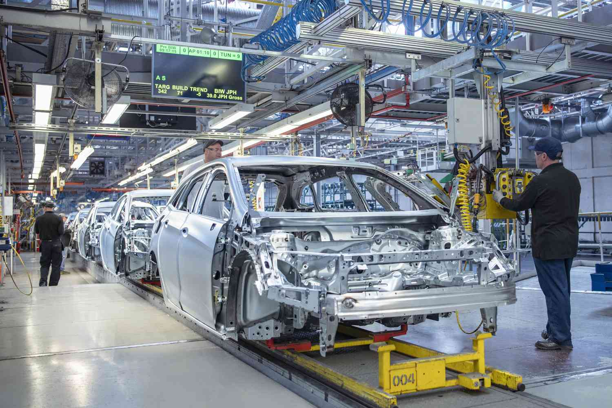
Where values meet results — ISO/IEC 17025:2017 accredited testing & inspection
Excellence in testing& inspection for metals.
We are committed to delivering precise, reliable and efficient testing solutions that ensure quality, safety and compliance across industries.
We operate in mechanical, chemical, metallography, corrosion and NDT testing of metal and alloys as per ISO/IEC 17025:2017 standard.
0ISO/IEC Accreditation
0Reports Delivered
0Industry Segments
0Testing Accuracy
APIASTMNACEISOASMERoHS
APIASTMNACEISOASMERoHS
Capabilities
Testing, inspection and certification for metals and alloys.
Our services cover mechanical, chemical, metallography, corrosion and NDT testing to support quality, compliance and failure investigation.

Mechanical
Mechanical Testing
Comprehensive mechanical testing of ferrous, non-ferrous and alloy materials for tensile, impact, hardness, bend and qualification programs.
ASTMISISO
Explore

Corrosion
Corrosion Testing
Corrosion assessment for ferrous and non-ferrous materials, including HIC, SCC, IGC and coating performance reviews.
ASTMNACEISO
Explore

Chemical
Chemical Testing
OES/ICP based chemical testing for ferrous and non-ferrous alloys, grade confirmation and composition verification.
ASTMRoHSOES
Explore
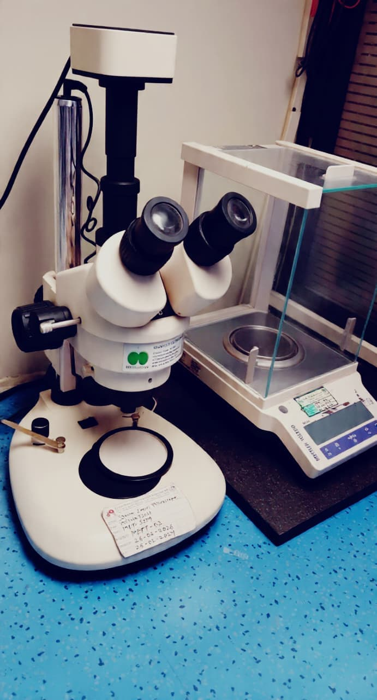
Metallography
Metallography Testing
Microstructure and macrostructure examination for material control, coating evaluation and failure investigation.
ASTMISOSEM
Explore

Calibration
Calibration Services
Instrument calibration support for measuring tools, inspection teams and audit-ready quality records.
ISONABLQMS
Explore

NDT
Non Destructive Testing
Advanced NDT methods to detect defects in materials, welds and components without damage.
ASMEISONDT
Explore

About
Built for engineering teams that need defensible answers.
Asian Testing & Inspection Services LLP is an independent testing and inspection laboratory supporting metals and alloys through chemical, mechanical, metallography and corrosion testing, guided by ISO/IEC 17025:2017 quality practices, skilled professionals and reliable technical reporting.
Foundation
Building the Foundation of Trust and Technical Excellence
Asian Testing & Inspection Services LLP was established to provide reliable, accurate and technically sound testing and inspection solutions for industries where material quality is critical.
Expansion
Expanding Capabilities to Serve Diverse Industries
Our capabilities cover Mechanical Testing, Chemical Testing, Metallography, Corrosion Testing, NDT, DT and Material Characterization, helping clients access comprehensive testing support under one roof.
Innovation
Driving Testing Excellence Through Technology and Expertise
We improve testing methods, laboratory practices and technical capabilities by combining modern equipment, established standards, skilled professionals and a quality-driven approach.
Industry Reach
Building Strong Partnerships Across Industrial Sectors
We support engineering, manufacturing, automotive, construction, infrastructure, oil & gas, power, fabrication and metal industry clients with requirement-focused testing solutions.
Future
Building a Stronger Future Through Continuous Excellence
Our focus is to expand capabilities, adopt advanced technologies, strengthen expertise and keep delivering reliable testing and inspection solutions that industries can trust.
Workflow
From consultation to certification, every step is visible.
- 01Consultation
Scope, material, standard and urgency are clarified.
- 02Inspection
Samples are logged, photographed and assigned trace IDs.
- 03Testing
Programs run under defined methods and acceptance criteria.
- 04Analysis
Results are reviewed by technical specialists.
- 05Certification
Reports are issued with method references and evidence.
- 06Delivery
Findings are shared clearly for purchase, release or action.
Industries
Trusted across high-consequence sectors.


Quality Policy
Quality assurance built into every testing assignment.
The most important goal of our organization is quality assurance. To maintain the required level of quality, we put consistent effort into every stage of work. Our trained and accountable quality inspectors monitor fabrication, product quality and testing requirements in accordance with the necessary criteria, so customers receive precise and dependable testing results.
The management and staff of Asian Testing & Inspection Services LLP are committed to delivering goods and services that satisfy client needs along with applicable legal and regulatory requirements. Our policy is to maintain an efficient system for occupational health, environmental safety, security and quality, supporting reliable service and continual improvement.
"Asian Testing and Inspection Services gave us the clarity to release a critical batch with confidence. The reporting was clean, fast and defensible."
Quality DirectorGlobal Manufacturing Group"Their testing program planning saved weeks of back-and-forth. The team understood the standard and the project pressure."
Project LeadEnergy Infrastructure"The analysis summary was practical enough for management and detailed enough for our engineering review."
Materials EngineerAutomotive SupplierOur Team
Experienced people behind every reliable report.
Meet the technical and client-support team shaping accurate, timely and audit-ready testing programs.
Rahul Sharma
Technical DirectorLeads method planning, quality review and technical reporting for complex material programs.
Priya Nair
Quality ManagerOversees NABL documentation, traceability, calibration records and audit readiness.

Amit Patil
Inspection EngineerCoordinates sample intake, inspection workflows and fast communication with client teams.
Trusted by Leading
Our Esteemed Partners.
We collaborate with industry leaders and innovators to deliver reliable testing, inspection and certification support.
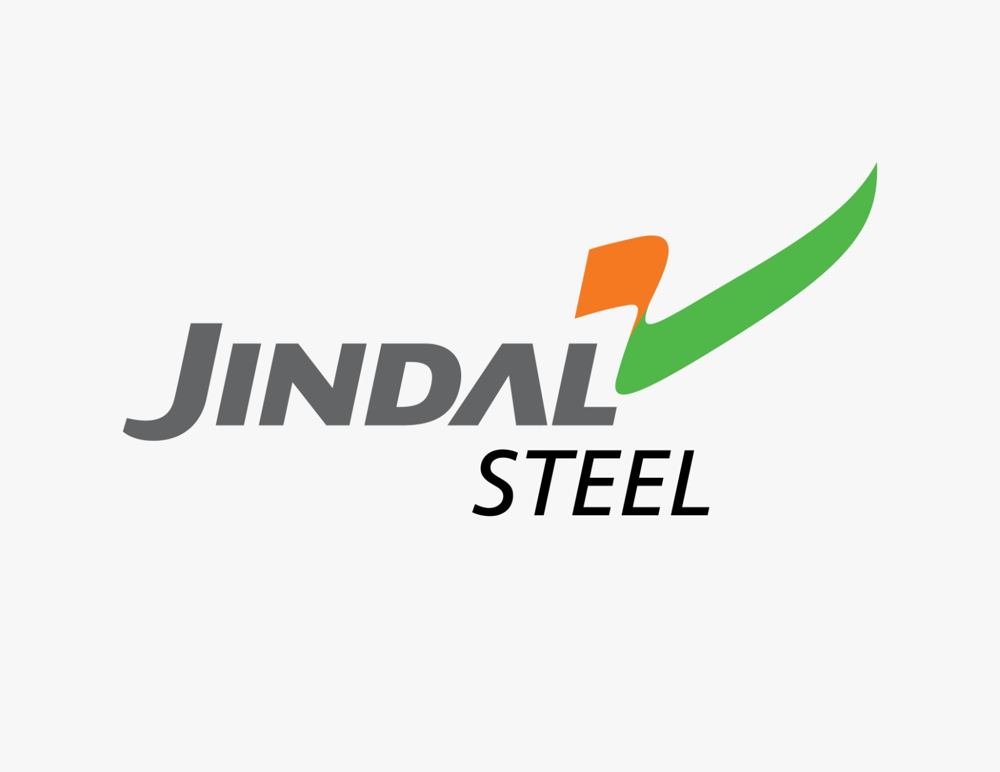
Jindal Steel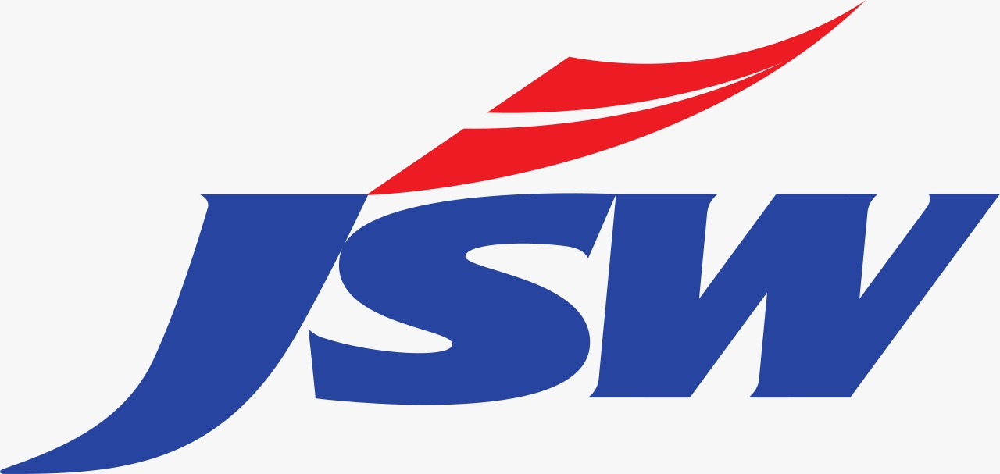
JSW Steel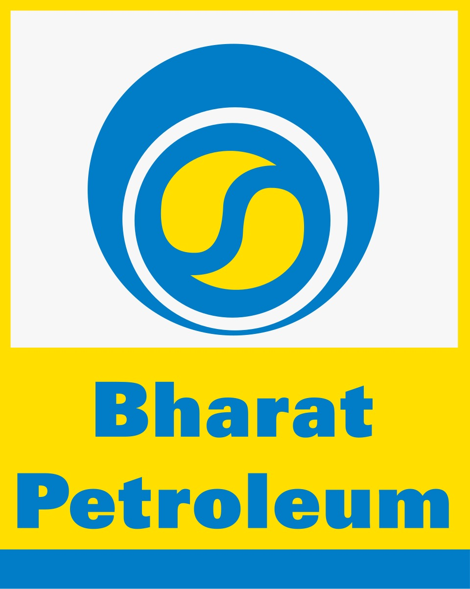
Bharat Petroleum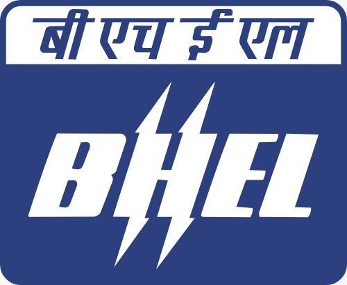
BHEL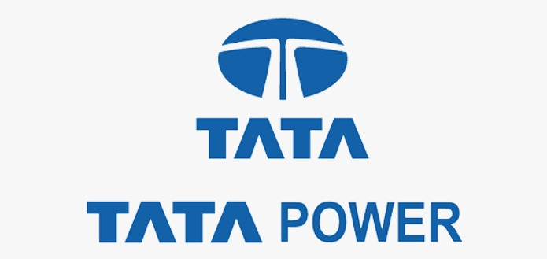
Tata PowerGodrej
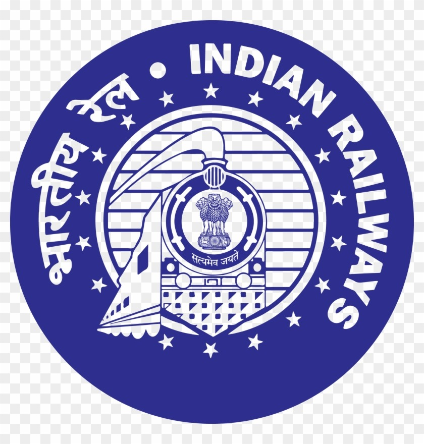
Indian Railways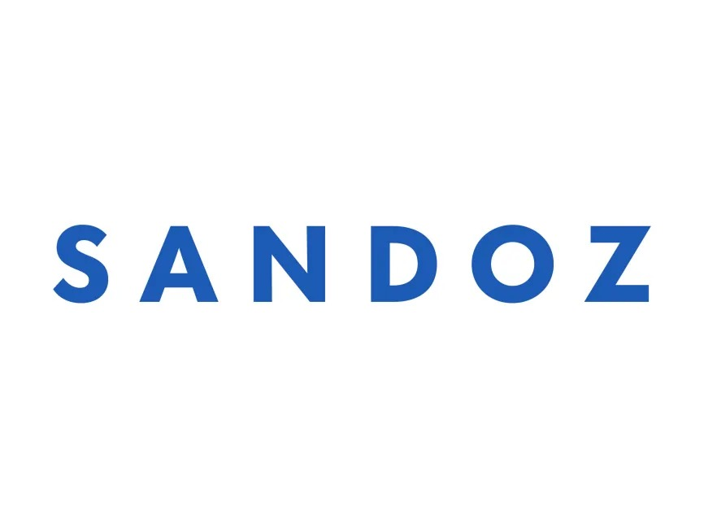
Sandoz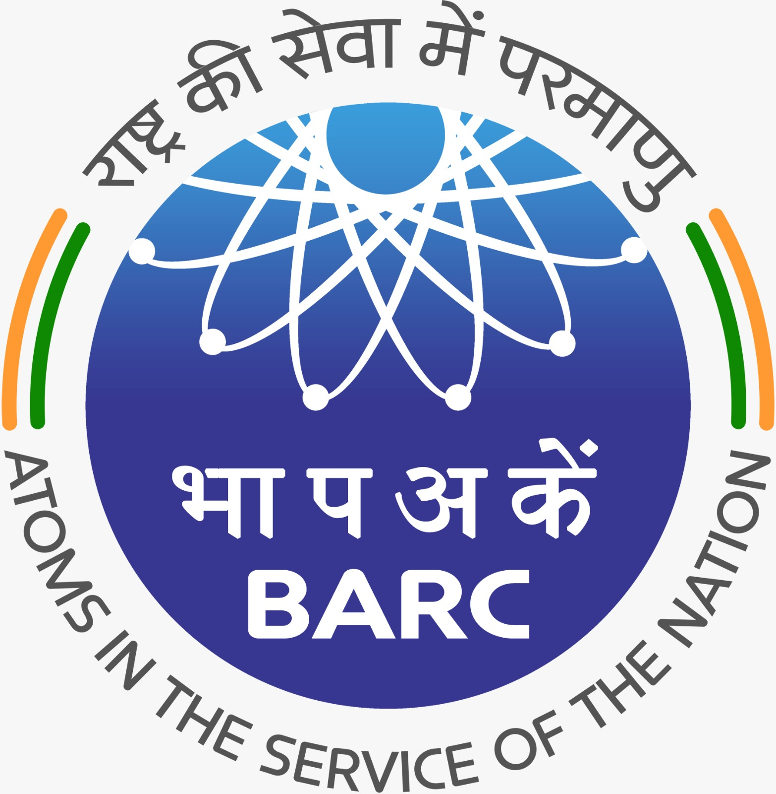
BARC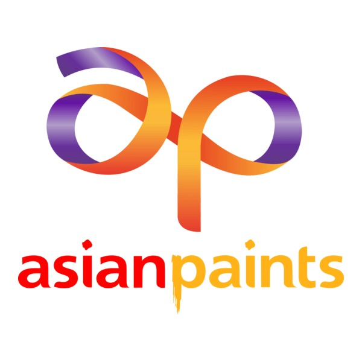
Asian Paints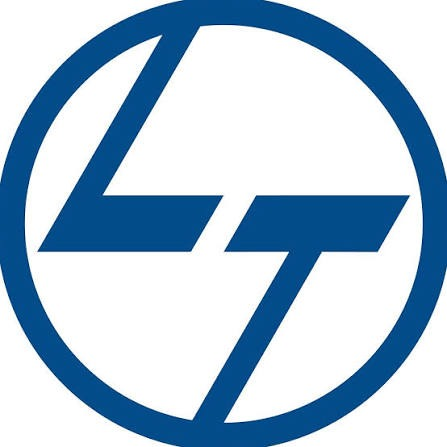
L&T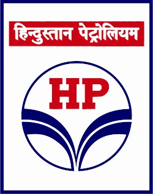
HPCLTest Planner
Build a smarter quote request.
Prepare pricing, turnaround and sample requirements without unnecessary back-and-forth.
Contact
Send samples with confidence.
Unit No 2 & 3, Nevali Naka, Near Ganesh Temple, Ambernath MIDC Road, Kalyan (East), Maharashtra 421306.
Business hoursMon-Sat / 9:00 AM - 9:00 PM